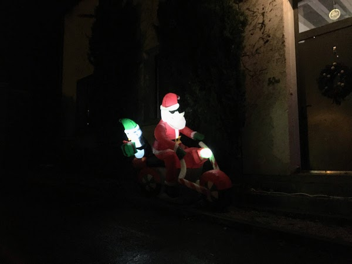

Meilleurs voeux pour 2022!

(Rochecorbon, 2021)
- Where the Earth Meets the Sky, Wildflower, WildFlower
- Theme From "Blow Up", Oblique (Reissue), Bobby Hutcherson
- Bright Moments Song, Bright Moments, Rahsaan Roland Kirk
- Distractions, Flowers In The Dirt (Remastered), Paul McCartney
- L'Oiseau, L'Oiseau, Lucía Fumero
- Beads Upon an Abacus, Beads Upon An Abacus, Kitchen Cynics
- Magnificat, Caleb Burhans: Evensong, Trinity Wall Street Choir
- Sonata in E Minor, Op. 3 No. 5: I. Gavotte. Andante grazioso, "Générations" Senaillé & Leclair : Sonatas for Violin and Harpsichord, Théotime Langlois de Swarte
- Oi Toli, Salos (feat. Bert Cools, Indrė Jurgelevičiūtė, Jean-Christophe Bonnafous & Jauna Muzika Choir), Merope
- La Jetée, Forfolks, Jeff Parker
- Pale Gas, Refrains, Ross Simonini
- Grasslands, A Visible Length of Light, Lea Bertucci